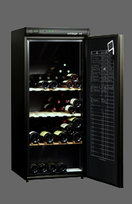

| AV 175 | Pratique, le thermomètre en façade et le nouveau registre de cave international pour tenir à la craie la gestion des bouteilles présentes. Confortable les clayettes collector réversible à empreintes en bois massif | |||
|  | Contenance | Système froid | Dimensions (hxlxp) | Porte |
| 178 (en 75cl) | Compresseur | 144x62x67 | Pleine | |
| Accessoires : 2 Clayette réversibles et 1 Modulable (en payante). Régulation électromécanique, Afficheur Digital de température |
Noir | |||
| AV 205 | Astucieux, sa lampe de lecture pour lire les etiquettes dans un environnement obscur | |||
 |
Contenance | Système froid | Dimensions (hxlxp) | Porte |
| 195 (en 75cl) | Compresseur | 139x70x68 | Pleine | |
| Accessoires : Serrure à clé, 1 Cayette coulissante (possibilité de supplémentaires en option payant), Régulation électronique, Dinynamique DataDisplay | Noir | |||
| CV 183 | Elégante, la poignée de porte en bois profilé | |||
 |
Contenance | Système froid | Dimensions (hxlxp) | Porte |
| 170 (en 75cl) | Compresseur | 125x70x67 | Pleine | |
| Accessoires : Serrure à clé, Cayettes en bois | Brun foncé | |||
Bientôt de nouvelles caves disponibles ...
© SFCV - Mentions légales
L'abus d'alcool est dangereux pour la santé, à consommer avec modération